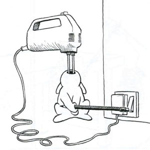
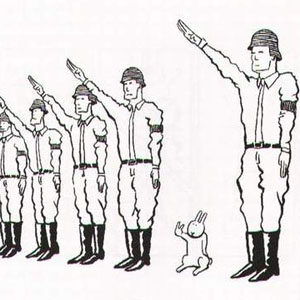

- 
- 
What are The Bunny Suicides?
The Bunny Suicides is the name for group of people who like Bunny Suicides Books from the auteur Andy Riley.
We want the world too get to know them. The main character is a Bunny that want's to die, and tries to kill itself. Each cartoon shows one or more white rabbits in their creative attempts to end their lives using a variety of items. Revolving doors, a toaster, a cricket ball, a boomerang, a hand-grenade, the shining sun, a magnifying glass, smoking of several cigarettes, bowling balls and any combination of these are all featured as suicidal tools. The book also features links to books and films. The cartoons are often drawn in such a way that the bunny's exact method is not immediately obvious, leaving the reader to work out exactly how the bunnies plan to end their lives.
We also want you to know that we love real rabbits and we don't harm them, only the ones we draw. If you have a great idea for a 'Bunny suicide' drawing, than you can contact us by sending us your 'Bunny Suicide' drawings and maybe we will put them on the website.